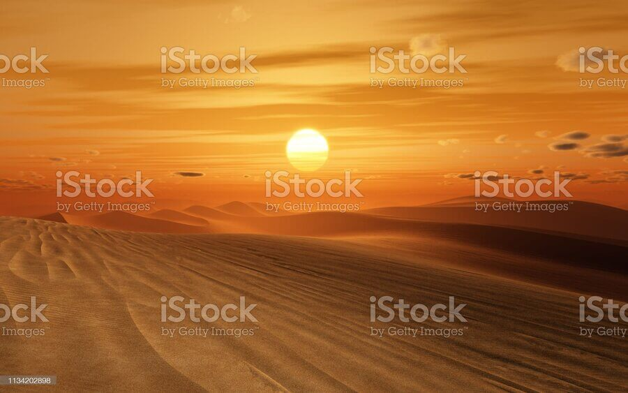

Desert Mo
Audio Presentation
Video Presentation
peu abondantes, et où, par conséquent, les conditions de vie sont
hostiles pour les plantes et pour les animaux. Les déserts font
partie des environnements extrêmes. Le manque de végétation expose
la surface,
| Date | Auteur | Pays | 17/05/22 | Abdel New | Moroco |
|---|